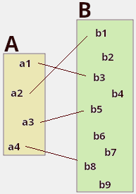
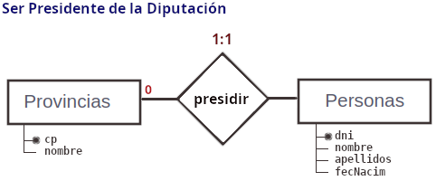
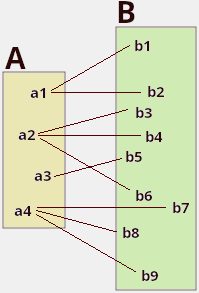
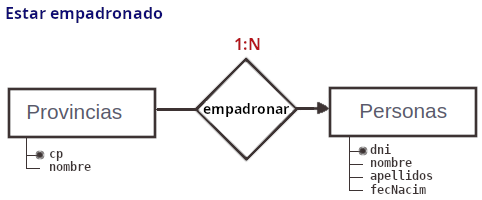
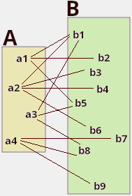
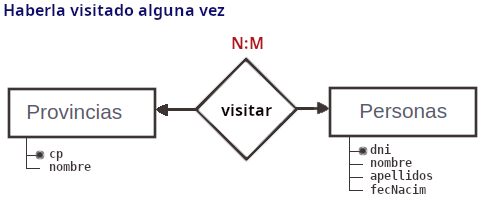

Cardinalidad
Cuando se establece una relación entre dos entidades se define la cardinalidad como el número de elementos con los que participa cada una de las entidades en la relación.
La cardinalidad dependerá del tipo de relación que establezcamos entre las entidades,
y pueden ser:
- uno a uno (1:1)
- uno a muchos (1:N)
- muchos a muchos (N:M)
¿y qué objetivo se persigue determinando la cardinalidad de una relación?
El objetivo es evitar a toda costa que queden campos sin valor, es decir, evitar en la
mayor medida de lo posible la inclusión de nulos (NULL) en la base de datos.

Relaciones 1:1 / Uno a Uno
Entre dos entidades A y B existe una relación uno a uno, cuando cada registro de la entidad A se relaciona, a lo sumo, con un registro de la entidad B, y viceversa.
Ejemplo: si entre las entidades "Provincia" y "persona" se define la relación de
"ser el Presidente de la Diputación":
- Cada provincia tiene a una única persona como presidente
- Cada persona es presidente como máximo, de una provincia.
En este caso, una de las claves primarias viaja a la otra tabla. Tenemos dos posibles soluciones:
1. Provincia (cp, nombre, dniPres(f), ... ) <-- óptima! Persona (dni, nombre, apellidos, fNac, ...) 2. Provincia (cp, nombre, ... ) Persona (dni, nombre, apellidos, fNac, cpPres(f), ... )
La solución óptima es la primera. ¿Por qué? porque evita la presencia de nulos en la BDD:
1. Como toda provincia tiene un presidente, el campo dniPres(f) nunca estará vación (nunca será NULL).
2. En el segundo diseño, aquellas personas "no presidente" tendrán un nulo en el campo cpPres(f).
Para el presidente, en el campo cpPres(f) aparecerá el código postal de la provincia que preside.
Razonamiento a seguir: buscar las cardinalidades mínimas de la relación
Para tener claro el sentido en el que viajará la clave, debemos razonar las "cardinalidades mínimas":
- Cada provincia tiene una persona presidente (como mínimo, y como máximo también).
- Cada persona es presidente:
- como mínimo, de ninguna provincia (la mayoría de las personas no serán presidentes)
- como máximo de una única única provincia.

👉 La clave viaja a la entidad que participa con menor cardinalidad mínima, en este caso, "Provincias" recibe la clave de "Personas".
¿y qué pasa si ambas cardinalidades mínimas son 0?
En este caso, propagar cualquiera de las claves primarias a la otra entidad ocasionaría
valores nulos. Se recomienda crear una nueva tabla con la relación, donde se incluirán
como atributos las claves de las entidades relacionadas (ver abajo relaciones N:M).

Relaciones 1:N / Uno a varios / uno a muchos
Un registro de una entidad en A se puede relacionar con multitud de registros de B.
Pero los registros de B se relacionan, a lo sumo, con un registro de A.
Ejemplo: si entre las entidades "Provincia" y "persona" se define la relación de
empadronamiento (provincia en la que uno vota):
- En una provincia se pueden empadronar muchas personas
- Una persona, sólo puede estar empadronada en una única provincia.

Las tablas a las que da lugar esta relación son las siguientes:
Provincia (cp, nombre, dniPres(f), ... )
Persona (dni, nombre, apellidos, fecNacm, cp(f), ...)
Como toda persona está empadronada en alguna provincia, el campo cp(f) nunca será NULL.
👉 La clave viaja a la entidad que participa con mayor cardinalidad, en este caso, "Personas" recibe la clave de "Provincias".

Relaciones N:M / Varios a varios / muchos a muchos
Una entidad en A se puede relacionar con 1 o con muchas entidades en B y viceversa
Ejemplo: si entre las entidades "Provincia" y "persona" se define la relación de
haber hecho alguna visita a la provincia:
- Una provincia puede haber sido visitada por muchas personas
- Una persona, puede haber visitado muchas provincias.

En este caso, en la BDD se crea una nueva tabla para la relación, que recibe como foráneas las claves de las entidades que relaciona:
Provincia (cp, nombre, ... )
Visita (dni(f), cp(f), ...)
Persona (dni, nombre, apellidos, fecNacm, ...)
👉 Ambas claves viajan a la relación, que da lugar a una nueva tabla.